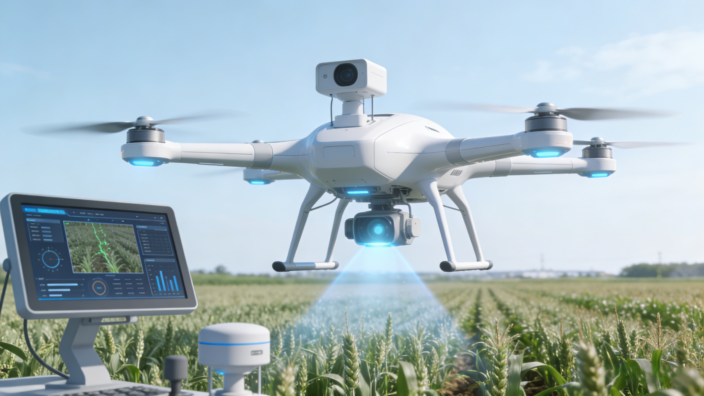
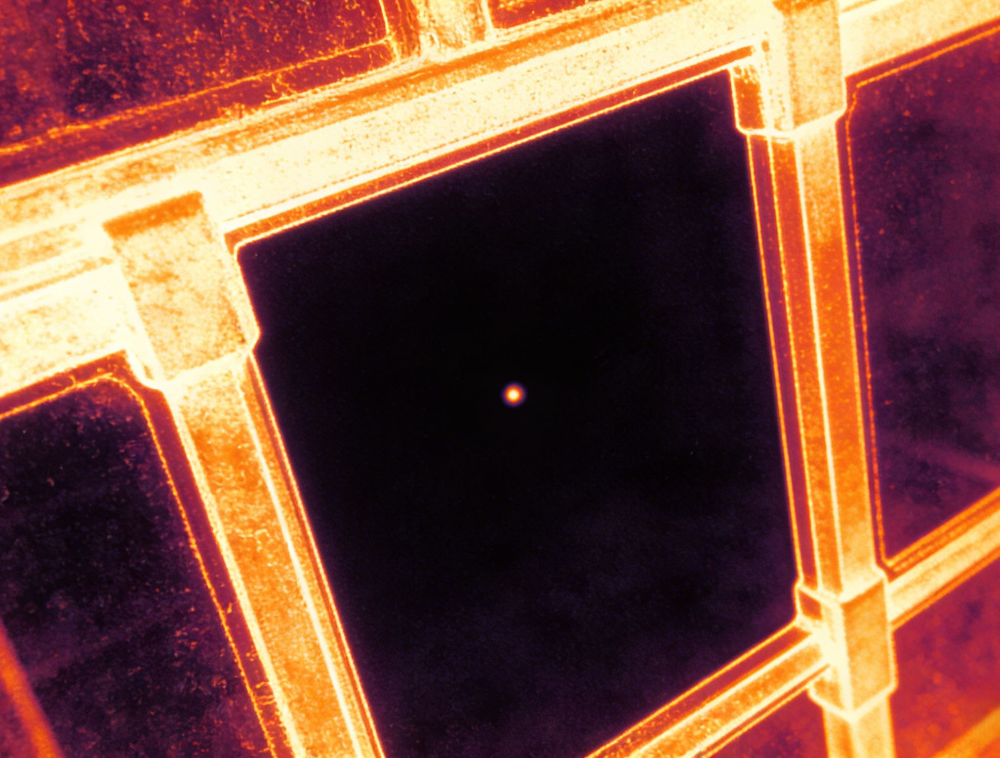

精准农业与植物病害检测
Precision Agriculture and Plant Disease Detection围绕田间图像中的病斑、虫害和作物生长状态，研究小目标检测、实例分割、多光谱感知与端到端 Transformer 检测方法。
查看详情学术交流 · 科研育人
Computers and Electronics in Agriculture, 224, 109123
Tsinghua Science and Technology, 31, 1263-1281
Physics in Medicine & Biology, 70, 115024
Computers and Electronics in Agriculture, 239, 111055
围绕田间图像中的病斑、虫害和作物生长状态，研究小目标检测、实例分割、多光谱感知与端到端 Transformer 检测方法。
查看详情
面向无人机与遥感图像解译，研究注意力引导特征融合、复杂背景中的小目标检测与高精度目标定位。
查看详情围绕低剂量 CT 图像的噪声抑制与结构保持，研究上下文 Transformer、领域对比学习和鲁棒视觉表征。
查看详情
聚焦红外小目标增强、背景杂波抑制与复杂环境下的鲁棒检测。
查看详情